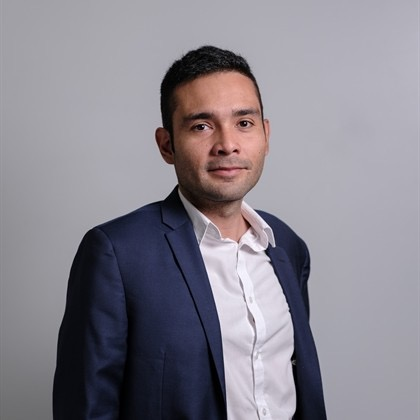

Analítica aplicada · inversión a largo plazo
Datos al servicio de una decisión — y un registro público de ETFs, sin timing ni apalancamiento

Economista con maestría en analítica de datos. Casi doce años en investigación de mercados y economía colombiana; hoy, auditoría interna global y fraude.
Profesor en la Universidad Sergio Arboleda. Consultor independiente. Me apasiona el ciclismo y me divierto más en las rutas de gravel.
Core de ETFs, aportes periódicos (DCA), sin apalancamiento. Composición al 4 oct 2026; el perfil en vivo puede diferir. YTD público +22.5%.
Actualizado 4 oct 2026, 5:10 p.m. COT
La meta es que cada persona invierta mes a mes (DCA) y pueda llegar a US$10.000 o más. Se puede empezar con US$200. Eso es una meta, no un requisito ni una promesa.
Abrir perfil en eToro →Asignación aproximada (actualizada 4 oct 2026). Los porcentajes exactos pueden variar en el perfil en vivo.
Backtests y supuestos en GitHub:
Simulador y plantilla para ordenar caja antes de tomar una decisión de portafolio.
El simulador pesa varios megas. No se descarga hasta que lo pidas, para que la página abra rápido.
Explicaciones cortas sobre DCA, paciencia, el core de ETFs y por qué el timing no es necesario para quien aporta cada mes.
Andrés Alejandro Rodríguez Lozano, economista y científico de datos en Colombia. Pro Investor, nivel Champion, en eToro. Auditor digital y profesor de analítica en la Universidad Sergio Arboleda.
Risk score 4. 100% renta variable, 0% apalancamiento. En un año tipo 2022 el mix puede caer alrededor de un 20%.
La meta es invertir mes a mes (DCA) y poder llegar a US$10.000 o más. Se puede empezar con US$200. US$10.000 es una meta, no un requisito ni una promesa. Activar Copiar operaciones abiertas. Horizonte mínimo 3 años. No es asesoría.